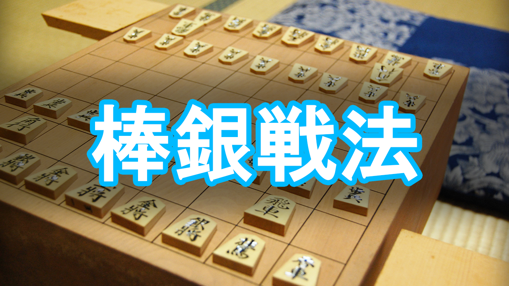

学習
戦法一覧
紹介
プラン
お問い合わせ
×
棒銀戦法
棒銀とは銀将を棒のように まっすぐ進めて攻めることから この名が付きました。
総じて速攻性に優れ、 1から4筋を絡めると侮れない破壊力を持ちます。
「覚えやすい戦法」「将棋の基本」として、 初心者の方に一番人気の高い戦法です。
プロの対局でもしばしば現れ、有名な加藤一二三九段は棒銀戦法を得意としています。
それではやっていきましょう！

大きい見出し
説明説明説明説明説明説明説明説明説明説明説明説明説明説明説明説明説明説
大きい見出し
説明説明説明説明説明説明説明説明説明説明説明説明説明説明説明説明説明説明
ここでスライドは終わりです
演習に進む
スライドをもう１度見る！